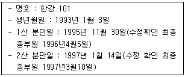
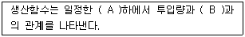
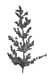
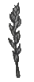
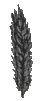
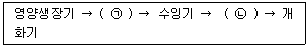

축산산업기사 (2014-03-02 기출문제)
1과목: 가축번식 육종학
1. 산란계 선발요건으로 옳지 않은 것은?
- 다산성이어야 한다.
- 산란기 동안 폐사율이 적어야 한다.
- 몸의 크기가 커야 한다.
- 난중에 무거워야 한다
(정답률: 86%)

2. 다음 중 돼지의 경제형질에 대한 유전력의 설명으로 잘못된 것은?
- 등지방 두께는 0.1 이하의 유전력을 나타낸다.
- 증체량의 유전력은 중등 정도이다.
- 체장의 유전력은 고도이다.
- 복당산자수에 대한 유전력은 일반적으로 저도이다.
(정답률: 78%)
3. 돼지의 경제 형질 중에서 유전력이 가장 낮은 것은?
- 산자수
- 이유시 복당체중
- 체장
- 임신율
(정답률: 65%)
4. 소의 일반적인 성성숙 월령으로 가장 적합한 것은?
- 5 ~ 8개월
- 8 ~ 12개월
- 12 ~ 18개월
- 20 ~ 24개월
(정답률: 75%)
5. 실제로 번식에 사용할 수 있는 한우의 초임 적령은?
- 5 ~ 6개월령
- 10 ~ 12개월령
- 16 ~ 18개월령
- 22 ~ 24개월령
(정답률: 66%)
6. 포유류의 정자가 성숙되는 곳은?
- 정소
- 정소상체
- 정관
- 정낭선
(정답률: 73%)
7. 돼지에 있어서 새끼의 잡종강세뿐 아니라 모체의 잡종강세도 이용될 수 있는 교배법은?
- 1대 잡종의 이용
- 윤환교배
- 근친교배
- 퇴교배
(정답률: 58%)
8. 좁은 의미의 유전력 추정에 이용되지 않는 분산은?
- 표현형 분산
- 환경분산
- 상가적 유전분산
- 상위성 분산
(정답률: 54%)
9. 다음 젖소의 번식성적에 따른 분만 간격으로 가장 적합한 것은?

- 696일
- 410일
- 284일
- 126일
(정답률: 70%)
10. 우리나라에서 계절 번식 동물의 번식 계절이 올바르게 짝지어진 것은?
- 면양 : 9 ~ 11월
- 말 : 9 ~ 11월
- 멧돼지 : 4 ~ 5월
- 사슴 : 3 ~ 5월
(정답률: 68%)
11. 임마혈청성 성선자극 호르몬(RMSG)는 어떤 호르몬의 생리작용과 비슷한가?
- FSH(난포자극 호르몬)
- LH(황체형성 호르몬)
- Estrogen(에스트로겐)
- Progesterone(프로게스테론)
(정답률: 69%)
12. 1일 증체량이 600g 인 암퇘지와 1일 증체량이 900g인 수퇘지를 교배시켜 여기서 생산된 자손의 1일 증체량이 855g 이였다고 할 때 잡종강세 발현율은?
- 8%
- 14%
- 20%
- 26%
(정답률: 69%)
13. 고기소의 경제형질 중에서 가장 중요한 것은?
- 비유량
- 도체의 품질
- 외모와 유지량
- 산자수
(정답률: 79%)
14. 다음 중 임신기간이 가장 긴 동물은?
- 소
- 말
- 양
- 돼지
(정답률: 73%)
15. 여러 개의 형질을 개량하고자 할 때 이용하는 선발법은?
- 산발지수
- 간접선발
- 종웅지수
- 후대검정
(정답률: 73%)
16. 다음 호르몬 중 가축의 분만시 자궁의 수축에 관여하는 호르몬은?
- Androgen(안드로겐)
- Gonadotrophin(성선자극 호르몬)
- Oxytocin(옥시토신)
- Progesterone(프로게스테론)
(정답률: 83%)
17. 젖소의 평균 임신기간으로 가장 적합한 것은?
- 평균 282일
- 평균 114일
- 평균 150일
- 평균 60일
(정답률: 85%)
18. 다음 중 세대간격(世代間隔)의 설명으로 옳은 것은?
- 자손이 출생시 양친의 평균연령
- 아비의 첫 수정일
- 어미의 첫 수태일
- 아비의 첫 수정일과 어미의 첫 수태일의 평균
(정답률: 68%)
19. 종돈 검정소에서 검정개시 체중은 30kg이며, 30kg 도달일령이 75일인 종돈을 검정한 결과 90kg, 도달일령이 135일이었다면 검정기간 동안의 일당 증체량은?
- 1000g
- 850g
- 800g
- 750g
(정답률: 72%)
20. 뇌하수체 후엽에서 분비되는 호르몬은?
- FSH(난포자극 호르몬)
- Oxytocin(옥시토신)
- PMSG(임마혈청성 성선자극 호르몬)
- Progesterone(프로게스테론)
(정답률: 69%)
2과목: 가축사양학
21. 다음 중 좋은 고기와 경지방을 만드는 사료는?
- 밀기울
- 장유박
- 쌀겨
- 누에번데기
(정답률: 66%)
22. 닭의 영양적 특성과 가장 거리가 먼 것은?
- 위는 NPN을 이용할 수 있는 능력이 있다.
- 다른 가축에 비해 장의 길이가 짧다.
- carotene의 이용률이 나쁘지만 xantophyll은 잘 이용한다.
- 사료에 섬유소를 첨가하면 배설시간이 짧아진다.
(정답률: 51%)
23. 가축의 성장단계가 순서적으로 이루어져 있는 것은?
- 근육 → 뼈 → 지방
- 뼈 → 근육 → 지방
- 근육 → 지방 → 뼈
- 뼈 → 지방 → 근육
(정답률: 79%)
24. 베타산화(β-oxidation)에 의해 분해가 이루어지는 영양소는?
- 지방산
- 포도당
- 아미노산
- 비타민
(정답률: 69%)
25. 다음 중 산란계의 케이지 사육에 관한 장점과 가장 거리가 먼 것은?
- 단위면적당 사육두수가 맣고, 사양관리에 노력이 적게든다.
- 설치비용이 적고, 보온관리가 쉽다.
- 닭똥이 케이지 밑으로 떨어져 모우기 쉽고, 청결한 알을 생산할 수 있다.
- 압사할 염려가 없고, 사회적 서열을 제거할 수 있다.
(정답률: 71%)
26. 가축의 사료섭취량이 4kg, 똥배설량이 3kg일 때 사료의 조단백질 함량이 10%, 똥의 조단백질함량이 5%라고 하면 조단백질의 소화율은? (단, 건물 기준으로 한다)
- 50.0%
- 52.0%
- 62.5%
- 72.5%
(정답률: 52%)
27. 증체량이 0.5kg이고, 사료섭취량이 1.0kg일 때, 사료 요구율은 얼마인가.
- 0.5
- 1.0
- 1.5
- 2.0
(정답률: 68%)
28. 비육은 체지방을 증가시크는 목적이기 때문에 비육을 위한 에너지의 공급은?
- 초기보다 말기에 더 많은 에너지를 공급한다.
- 말기보다 초기에 더 많은 에너지를 공급한다.
- 초기보다 중기에 더 많은 에너지를 공급한다.
- 말기보다 중기에 더 많은 에너지를 공급한다.
(정답률: 79%)
29. 소 비육시 육질향상의 목적은?
- 살코기를 많이 생산하는 것.
- 지방을 많이 생산하는 것.
- 기관과 내장에 지방을 많이 부착하는 것.
- 근육과 조직에 지방을 많이 축적하는 것.
(정답률: 78%)
30. 육계 사육시 단위면적당 사육밀도가 높아서 발생하는 현상이 아닌 것은?
- 단위시간에 단위면적당 생산량이 감소한다.
- 폐사율이 높아진다.
- 성장이 나빠진다.
- 사료섭취량, 사료요구율이 나빠진다.
(정답률: 74%)
31. 착유 사료 중에 Ca 및 P가 일시 부족할 때 나타나는 증상은?
- 젖 속의 Ca나 P함량이 감소한다.
- 유량이 감소한다.
- 유량 및 젖 속의 Ca, P의 함량이 감소한다.
- 유량 및 젖 속의 Ca, P함량에 변화는 없다.
(정답률: 56%)
32. 가축의 간에 지방이 과잉으로 축적되어 발생하는 병적증상을 지방간이라 하는데 이 지방간을 예방하기 위하여 사용할 수 있는 아미노산과 비타민은?
- 메치오닌 – 콜린
- 라이신 – 엽산
- 트립토판 – 나이아신
- 이소루신 – 티아민
(정답률: 69%)
33. 다음 중 가금의 일반적인 특징에 관한 설명으로 틀린 것은?
- 피부에 땀샘이 없다.
- 방광이 없고, 항문은 총배설강(cloaca)으로 되어 있다.
- 뼈에는 기낭이 있고 몸속에는 기실이 있다.
- 암컷의 난소와 난관은 좌우측에 있으나 좌측에만 성장발달 한다.
(정답률: 58%)
34. 동물의 에너지 평형을 유지하는데 필요한 정미에너지인 NEm에 포함되지 않는 것은?
- 기초대사 에너지
- 우유생산 에너지
- 활동 에너지
- 체온유지 에너지
(정답률: 80%)
35. 우유 4% FCM 1kg을 생산하기 위하여 필요한 TDN량을 0.3kg이라고 할 때 3.5% 우유 25kg을 생산하는 젖소는 우유생산만을 위하여 몇 kg의 TDN이 필요한가?
- 6.0kg
- 6.6kg
- 6.9kg
- 7.5kg
(정답률: 43%)
36. 한우 장기 비육시 비육후기 농후사료 다급에 의해 산중독이 발생하면 요 중 pH가 감소하여 인의 결정화를 촉진시켜 일어나는 증상이 요석증인데 이를 치료할 수 있는 물질은?
- 염화암모늄
- 중탄산나트륨
- 중탄산칼륨
- 인산마그네슘
(정답률: 57%)
37. 비육시 체중증가에 필요한 정미에너지를 바르게 설명한 것은?
- 체중이 같고 일당 증체량이 크면 요구량이 작아진다.
- 체중이 같으면 일당 증체량에는 관계없이 요구량은 같다.
- 일당 증체량이 같고 체중이 작으면 요구량이 커진다.
- 일당 증체량이 같고 체중이 크면 요구량이 커진다.
(정답률: 73%)
38. 가축을 비육할 때 체조성의 변화를 가장 정확하게 설명한 것은?
- 수분함량 감소와 지방함량 증가
- 수분함량 감소와 단백질 함량 증가
- 수분함량 증가와 지방함량 감소
- 수분함량 증가와 단백질 함량 감소
(정답률: 67%)
39. 다음 중 아마인박에 들어 있는 유해성분은?
- 솔라닌
- 리나마린
- 고시폴
- 시니그린
(정답률: 51%)
40. 가소화 영양소총량(TDN)을 구할 때 지방의 경우 2.25의 계수를 곱하여 계산하는 이유는?
- 탄수화물의 열량값이 지방보다 크므로
- 단백질의 단백질값이 지방보다 크므로
- 지방의 열량값이 탄수화물과 단백질보다 크므로
- 탄수화물의 전분값이 지방보다 크므로
(정답률: 76%)
3과목: 축산경영학
41. 다음 설명 중 ( ) 안의 내용을 올바르게 나열한 것은?

- A : 물가수준, B : 이익
- A : 기술수준, B : 이익
- A : 물가수준, B : 산출량
- A : 기술수준, B : 산출량
(정답률: 58%)
42. 사육목적에 따른 분류에 있어 모돈을 사육하여 자돈을 생산하고, 생산된 자돈을 비육하여 판매하는 경영형태를 나타내는 것은?
- 부업경영
- 번식경영
- 복합경영
- 일관경영
(정답률: 64%)
43. 축산물 유통의 물적 기능으로 옳지 않은 것은?
- 저장기능
- 운송기능
- 교환기능
- 가공기능
(정답률: 64%)
44. 고정자본재의 비용 산출항목으로 옳지 않은 것은?
- 수익
- 이자
- 유지비
- 감가상각비
(정답률: 58%)
45. 제한된 자원을 합리적으로 생산하기 위하여 1차식으로 수식화한 축산경영계획 최적화 분석기법으로 옳은 것은?
- 시산법
- 표준계획법
- 선형계획법
- 손익분기분석법
(정답률: 61%)
46. 축산노동력 효율화 요건으로 옳지 않은 것은?
- 인건비 최소화
- 경제적인 기계화
- 노동력 조직의 체계화
- 노동력 체계의 환경조성
(정답률: 63%)
47. 대규모 축산경영의 장점으로 옳지 않은 것은?
- 자본생산성의 향상
- 생산기술 취득용이
- 축산물 판매의 유리성
- 생산물 비표준화로 다양한 축산물 공급
(정답률: 71%)
48. 축산경영에서 순수익이 최대화되는 최적 생산수준에 관한 설명으로 옳지 않은 것은?
- 한계수익과 한계비용이 일치할 때
- 시장가격이 평균비용보다 작아질 때
- 총수익과 총비용의 차액이 최대일 때
- 생산요소와 생산물 가격비가 한계생산물과 일치할 때
(정답률: 65%)
49. 산란계 경영에 있어서 총가변비가 5천원, 총고정비가 1만원, 평균가변비가 1천원, 평균 고정비가 2천원일 때 평균 총비용은 얼마인가?
- 3000원
- 6000원
- 7000원
- 15000원
(정답률: 58%)
50. 축산물 생산비 계산의 전제조건으로 옳지 않은 것은?
- 화폐가치로 표시할 수 있어야 한다.
- 증여받은 재화나 상으로 받은 물품은 제외한다.
- 생산물을 생산하기 위하여 사용된 것이어야 한다.
- 정상적인 생산활동을 위해 사용된 것이어야 한다.
(정답률: 67%)
51. 축산경영 복합화의 장점이 아닌 것은?
- 기술의 고도화
- 노동배분의 평균화
- 토지이용의 효율화
- 자금회전의 원활화
(정답률: 66%)
52. 축산물 유통마진으로 옳지 않은 것은?
- 이윤
- 저장비
- 사료비
- 보험료
(정답률: 64%)
53. 축산물 유통의 특수성으로 옳지 않은 것은?
- 부패 방지를 위해 보관비용이 발생한다.
- 수요 공급은 가격 탄력적인 성격을 띠고 있다.
- 상품화를 위한 가공시설과 가공기술이 필요하다.
- 가축은 성숙되기 전일지라도 상품적인 가치가 있다.
(정답률: 59%)
54. 가변적인 투입요소의 1단위 추가투입에 따른 산출물의 변동을 뜻하는 개념은?
- 총생산력
- 순생산력
- 한계생산력
- 평균생산력
(정답률: 70%)
55. 축산경영의 특징으로 옳지 않은 것은?
- 경종농업에 비해 자연적 피해가 적다.
- 축산노동력은 농번기와 농한기가 명확히 구별된다.
- 경지면적의 대소보다는 가축수에 따라 그 규모가 결정된다.
- 답리작으로 사료 생산을 도모하여 토지의 이용률을 증진시킬 수 있다.
(정답률: 64%)
56. 축산물 생산비에서 감가상각 대상으로 옳지 않은 것은?
- 비육우
- 번식 돼지
- 착유 젖소
- 구입하여 사용 중인 트랙터
(정답률: 66%)
57. 농업은 생산의 전 과정을 분업화할 수 없고, 한 가지 작업의 전문화가 곤란하므로, 기능공이 있을 수 없으며, 작업의 적기 수행의 여부가 생산량에 커다란 영향을 끼친다. 이는 농업 노동력의 어느 특수성을 설명한 것인가?
- 농업노동의 이동성
- 노동감독의 곤란성
- 농업노동의 계절성
- 농업노동의 다양성
(정답률: 72%)
58. 축산경영에 관한 설명으로 옳지 않은 것은?
- 토지, 자본, 노동력 등을 이용한다.
- 기상 및 정책에 민감하지만 수입은 안정적이다.
- 축산생산물을 가공하여 판매, 이용, 처분을 한다.
- 가축을 사육하여 축산물을 생산하는 것이 목표이다.
(정답률: 74%)
59. A 육계사육농장의 총투입자본액이 5천만원, 조수입이 2천5백만원, 경영비는 1천5백만원, 자본순수익이 1천만원 일 때 자본수익율과 자본회전율은?
- 50%, 0.2
- 50%, 0.5
- 20%, 0.5
- 20%, 0.2
(정답률: 44%)
60. 일정기간 동안에 축산경영을 통해 발생한 비용과 이익의 상태를 기록한 회계정보를 무엇이라고 하는가?
- 일기장
- 대차대조표
- 영농기록장
- 손익계산서
(정답률: 77%)
4과목: 사료작물학
61. 사일리지용 옥수수의 예취 적기는?
- 출수 전
- 출수 직후
- 유숙기
- 황숙기
(정답률: 83%)
62. 화분과 목초 중 기호성이 높고 질이 좋으며 우리나라에서 가장 널리 재배되고 있는 초종은?
- 레드톱
- 브롬그라스
- 오차드그라스
- 위핑러브그라스
(정답률: 81%)
63. 사일리지가 후숙작용까지 끝나고 적당한 산미와 방향을 가져 가축에 급여할 수 있게 완성되기에는 최소 며칠이 소요되는가?
- 30 ~ 40일
- 50 ~ 60일
- 70 ~ 80일
- 90 ~ 100일
(정답률: 60%)
64. 다음 콩과목초 중에서 방목지용으로 널리 이용되는 반면 토양보호와 피복작물로도 이용성이 높은 것은?
- 화이트 클로버
- 레드 클로버
- 크림슨 클로버
- 스위트 클로버
(정답률: 56%)
65. 방목방법 중 초지이용률을 가장 향상시키고, 주로 집약적인 젖소 방목에 많이 쓰이는 것은?
- 대상방목법
- 계목법
- 윤환방목법
- 연속방목법
(정답률: 65%)
66. 다음 중 포복경(匍匐莖)을 가진 목초는?
- 레드 클로버
- 알팔파
- 화이트 클로버
- 오처드그라스
(정답률: 47%)
67. 다음 화본과 목초의 이삭 그림 중 원추화서인 것은?



(정답률: 73%)
68. 초지에서 어떤 식물을 살펴보니 잎은 3개의 작은 잎으로 되어 있으며 직립형이고 줄기와 잎 뒷면에는 가는 탈이 많았다. 잎에는 선명한 “V” 자형 무늬가 보였다. 이 식물의 이름은?
- 화이트 클로버(White Clover)
- 버즈풋 트레포일(Birdsfoot Trefoil)
- 알팔파(Alfalfa)
- 레드 클로버(Red Clover)
(정답률: 66%)
69. 재배하고자 하는 사료작물의 선택 기준이 아닌 것은?
- 보기가 좋을 것
- 수량이 많을 것
- 사료가치가 높을 것
- 기호성이 높을 것
(정답률: 83%)
70. 합리적으로 조합된 작물을 같은 토양에서 일정한 순서에 따라 규칙적으로 돌려가며 재바하는 작부방식은?
- 간작
- 윤작
- 단작
- 답리작
(정답률: 74%)
71. 다음 목초 중 건물 수량과 영양소 수량이 많은 것은?
- 알팔파
- 화이트 클로버
- 크림손 클로버
- 알사이크 클로버
(정답률: 75%)
72. 목초는 생육기온에 따라 남방형 목초와 북박형 목초로 나누며, 우리나라에서 재배되고 있는 목초는 대부분 북방형 목초이다. 북방형 목초의 생육적온은?
- 5 ~ 10℃
- 15 ~ 20℃
- 25 ~ 30℃
- 35 ~ 40℃
(정답률: 77%)
73. 화본과 사료작물의 일반적 특징은?
- 직근
- 근류균
- 수염모양 뿌리
- 잎은 2~3개의 작은 잎
(정답률: 76%)
74. 두과목초 중 사료가치가 우수하고 뿌리가 깊게 뻗어 여름철 더위와 가뭄에 강한 것은?
- 라디노 클로버
- 레드 클로버
- 버즈풋 트레포일
- 알팔파
(정답률: 69%)
75. 사일리지의 장점이 아닌 것은?
- 단위면적당 많은 가축을 기를 수 있다.
- 생초를 다즙질의 상태로 연중 저장이 가능하다.
- 건초로 만드는 것보다 영양분 손실이 많다.
- 날씨의 지배를 적게 받으며 조제할 수 있다.
(정답률: 75%)
76. 화본과 목초에 있어서 1번초로 가장 적당한 예취 시기는?
- 출수 초기
- 영양생장기
- 개화 말기
- 결실기
(정답률: 79%)
77. 초지조성에 있어서 한 가지 초종만 단파하는 것보다 여러가지 초종을 섞어 파종하면 여러 가지 이점이 있다. 다음 중 이점으로 틀린 것은?
- 가축 영양상 영양가의 균형이 잡혀 좋다.
- 초지 이용관리가 매우 용이해진다.
- 근계가 다르므로 땅속의 양문을 효율적으로 이용할 수 있다.
- 상번초와 하번초의 혼생으로 공간 경합이 적어진다.
(정답률: 68%)
78. 질소비료는 고온이나 건조기 또는 겨울에 월동이 시작되는 시기에 원칙적으로 사용하지 말아야 한다. 그 이유로 합당한 것은?
- 작물이 거의 이용하지 못하므로
- 저장양분의 고갈로 불량환경에 견디는 힘이 약해지므로
- 토양의 이화학적 성질이 매우 나빠지므로
- 목초의 사료적 가치가 매우 떨어지므로
(정답률: 60%)
79. 다음은 벼과 사료작물의 생육 과정이다. 각각 ( ) 안에 적합한 것은?

- ㉠ 절간신장기, ㉡ 출수기
- ㉠ 출수기, ㉡ 결실기
- ㉠ 지엽기, ㉡ 절간신장기
- ㉠ 출수기, ㉡ 지엽기
(정답률: 70%)
80. 양질의 건초가 갖추어야 할 조건 중 틀린 것은?
- 녹색도가 높아야 한다.
- 잎의 비율이 높아야 한다.
- 향기가 좋아야 한다.
- 발효가 잘 되어 있어야 한다.
(정답률: 69%)